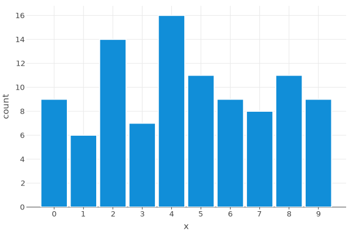
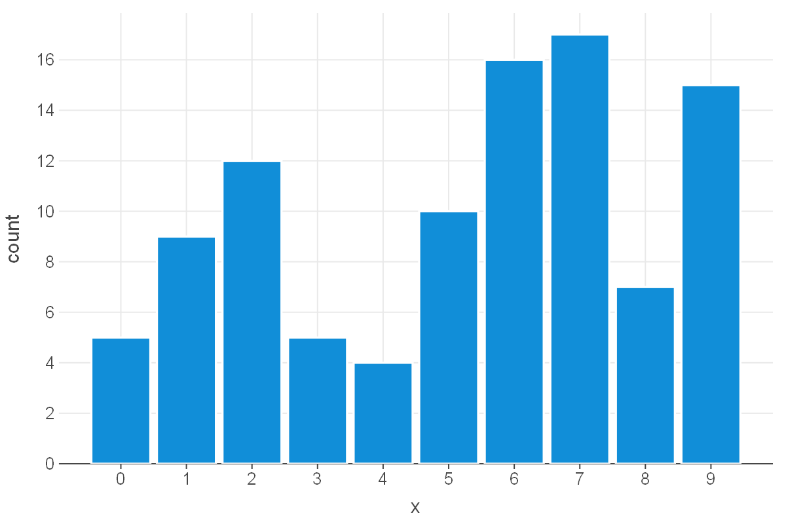

lets_plot.plot.core.PlotSpec#
- class lets_plot.plot.core.PlotSpec(data, mapping, scales, layers, metainfo_list=[], is_livemap=False, crs_initialized=False, crs=None, **kwargs)#
A class of the initial plot object.
Do not use this class explicitly.
Instead, you should construct its objects with functions ggplot(), corr_plot(…).points().build() etc.
- __init__(data, mapping, scales, layers, metainfo_list=[], is_livemap=False, crs_initialized=False, crs=None, **kwargs)#
Initialize self.
Extract the data shared by all layers.
- Returns:
- dict or DataFrame
Object data.
Examples
1from lets_plot import * 2LetsPlot.setup_html() 3p = ggplot({'x': [0], 'y': [0]}, aes('x', 'y')) 4p += geom_point(data={'x': [1], 'y': [1]}) 5p.get_plot_shared_data()
{'x': [0], 'y': [0]}
- has_layers() bool#
Check if the PlotSpec object has at least one layer.
- Returns:
- bool
True if object has layers.
Examples
1from lets_plot import * 2LetsPlot.setup_html() 3p = ggplot() 4print(p.has_layers()) 5p += geom_point(x=0, y=0) 6print(p.has_layers())
False True
- __add__(other)#
Allow to add different specs to the PlotSpec object.
Examples
1from lets_plot import * 2LetsPlot.setup_html() 3p = ggplot({'x': [0, 1, 2], 'y': [0, 1, 2]}, aes('x', 'y')) 4l = layer('point', mapping=aes(color='x')) 5s = scale_color_discrete() 6t = theme(axis_title='blank') 7p + l + s + t
- as_dict()#
Return the dictionary of all properties of the object with as_dict() applied recursively to all subproperties of FeatureSpec type.
- Returns:
- dict
Dictionary of properties.
Examples
1from lets_plot import * 2LetsPlot.setup_html() 3p = ggplot({'x': [0], 'y': [0]}) + geom_point(aes('x', 'y')) 4p.as_dict()
{'data': {'x': [0], 'y': [0]}, 'mapping': {}, 'data_meta': {}, 'kind': 'plot', 'scales': [], 'layers': [{'geom': 'point', 'mapping': {'x': 'x', 'y': 'y'}, 'data_meta': {}}], 'metainfo_list': []}
- show()#
Draw a plot.
Examples
1from lets_plot import * 2LetsPlot.setup_html() 3p = ggplot() + geom_point(x=0, y=0) 4p.show()
- to_svg(path=None) str#
Export the plot in SVG format.
- Parameters:
- selfPlotSpec
Plot specification to export.
- pathstr, file-like object, default=None
Сan be either a string specifying a file path or a file-like object. If a string is provided, the result will be exported to the file at that path. If a file-like object is provided, the result will be exported to that object. If None is provided, the result will be returned as a string.
- Returns:
- str
Absolute pathname of created file, SVG content as a string or None if a file-like object is provided.
Examples
1import numpy as np 2import io 3from lets_plot import * 4from IPython import display 5LetsPlot.setup_html() 6x = np.random.randint(10, size=100) 7p = ggplot({'x': x}, aes(x='x')) + geom_bar() 8file_like = io.BytesIO() 9p.to_svg(file_like) 10display.SVG(file_like.getvalue())

- to_html(path=None, iframe: bool | None = None) str#
Export the plot in HTML format.
- Parameters:
- selfPlotSpec
Plot specification to export.
- pathstr, file-like object, default=None
Сan be either a string specifying a file path or a file-like object. If a string is provided, the result will be exported to the file at that path. If a file-like object is provided, the result will be exported to that object. If None is provided, the result will be returned as a string.
- iframebool, default=False
Whether to wrap HTML page into a iFrame.
- Returns:
- str
Absolute pathname of created file, HTML content as a string or None if a file-like object is provided.
Examples
1import numpy as np 2import io 3from lets_plot import * 4LetsPlot.setup_html() 5x = np.random.randint(10, size=100) 6p = ggplot({'x': x}, aes(x='x')) + geom_bar() 7file_like = io.BytesIO() 8p.to_html(file_like)
- to_png(path, scale: float | None = None, w=None, h=None, unit=None, dpi=None) str#
Export a plot to a file or to a file-like object in PNG format.
- Parameters:
- selfPlotSpec
Plot specification to export.
- pathstr, file-like object
Сan be either a string specifying a file path or a file-like object. If a string is provided, the result will be exported to the file at that path. If a file-like object is provided, the result will be exported to that object.
- scalefloat
Scaling factor for raster output. Default value is 2.0.
- wfloat, default=None
Width of the output image in units. Only applicable when exporting to PNG or PDF.
- hfloat, default=None
Height of the output image in units. Only applicable when exporting to PNG or PDF.
- unit{‘in’, ‘cm’, ‘mm’}, default=None
Unit of the output image. One of: ‘in’, ‘cm’, ‘mm’. Only applicable when exporting to PNG or PDF.
- dpiint, default=None
Resolution in dots per inch. Only applicable when exporting to PNG or PDF.
- Returns:
- str
Absolute pathname of created file or None if a file-like object is provided.
Notes
Export to PNG file uses the CairoSVG library. CairoSVG is free and distributed under the LGPL-3.0 license. For more details visit: https://cairosvg.org/documentation/
Examples
1import numpy as np 2import io 3from lets_plot import * 4from IPython import display 5LetsPlot.setup_html() 6x = np.random.randint(10, size=100) 7p = ggplot({'x': x}, aes(x='x')) + geom_bar() 8file_like = io.BytesIO() 9p.to_png(file_like) 10display.Image(file_like.getvalue())

- to_pdf(path, scale: float | None = None, w=None, h=None, unit=None, dpi=None) str#
Export a plot to a file or to a file-like object in PDF format.
- Parameters:
- selfPlotSpec
Plot specification to export.
- pathstr, file-like object
Сan be either a string specifying a file path or a file-like object. If a string is provided, the result will be exported to the file at that path. If a file-like object is provided, the result will be exported to that object.
- scalefloat
Scaling factor for raster output. Default value is 2.0.
- wfloat, default=None
Width of the output image in units. Only applicable when exporting to PNG or PDF.
- hfloat, default=None
Height of the output image in units. Only applicable when exporting to PNG or PDF.
- unit{‘in’, ‘cm’, ‘mm’}, default=None
Unit of the output image. One of: ‘in’, ‘cm’, ‘mm’. Only applicable when exporting to PNG or PDF.
- dpiint, default=None
Resolution in dots per inch. Only applicable when exporting to PNG or PDF.
- Returns:
- str
Absolute pathname of created file or None if a file-like object is provided.
Notes
Export to PDF file uses the CairoSVG library. CairoSVG is free and distributed under the LGPL-3.0 license. For more details visit: https://cairosvg.org/documentation/
Examples
1import numpy as np 2import io 3import os 4from lets_plot import * 5from IPython import display 6LetsPlot.setup_html() 7n = 60 8np.random.seed(42) 9x = np.random.choice(list('abcde'), size=n) 10y = np.random.normal(size=n) 11p = ggplot({'x': x, 'y': y}, aes(x='x', y='y')) + geom_jitter() 12file_like = io.BytesIO() 13p.to_pdf(file_like)
- props()#
Return the dictionary of all properties of the object in their initial form.
- Returns:
- dict
Dictionary of properties.
Examples
1from lets_plot import * 2LetsPlot.setup_html() 3p = ggplot({'x': [0], 'y': [0]}) + geom_point(aes('x', 'y')) 4p.props()
{'data': {'x': [0], 'y': [0]}, 'mapping': <lets_plot.plot.core.FeatureSpec at 0x7eb7343a1ff0>, 'data_meta': {}}